코스 소개
나하에서 출발해 해중도로 드라이브, 하마히가섬 점심, 카후반타, 아마미츄의 무덤, 이케이지마까지 이어지는 중부 대표 코스입니다.
장거리 이동 부담이 적고 바다 전망, 섬 분위기, 카페와 산책 포인트를 한 번에 묶기 좋아 여유롭게 즐기기 좋습니다.
 okioki rent a car
Central Scenic Tour
okioki rent a car
Central Scenic Tour
바다와 섬을 따라 오키나와의 시작을 만나는 중부 대표 프라이빗 드라이브 코스입니다.
한국인 차량가이드가 동행해 한국어로 안내해드리며, 해중도로와 하마히가섬, 이케이지마까지 여유롭게 이어지는 하루 일정으로 구성되어 있습니다.
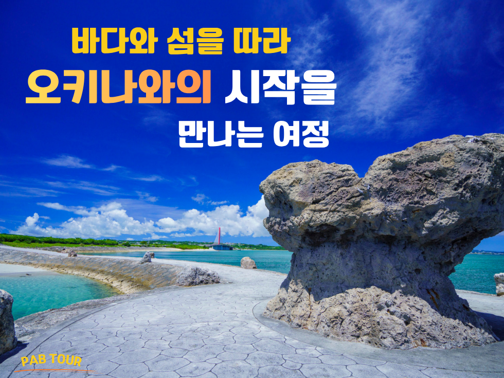
나하에서 출발해 해중도로 드라이브, 하마히가섬 점심, 카후반타, 아마미츄의 무덤, 이케이지마까지 이어지는 중부 대표 코스입니다.
장거리 이동 부담이 적고 바다 전망, 섬 분위기, 카페와 산책 포인트를 한 번에 묶기 좋아 여유롭게 즐기기 좋습니다.
전용 차량으로 이동하며 한국인 차량가이드가 동행해 한국어로 설명해드립니다. 픽업부터 종료까지 편안하게 이어지는 일정입니다.
숙소 위치와 당일 상황에 맞춰 동선을 조정할 수 있어 이동 시간을 줄이고 관광에 집중하기 좋습니다.
중부 감성 드라이브는 아래 순서로 진행됩니다.
※ 일정은 예시이며 당일 상황에 따라 일부 변경될 수 있습니다.
※ 아메리칸 빌리지는 교통 상황에 따라 생략될 수 있습니다.
기존 갤러리는 유지하고, 이번에 주신 사진 중 중복되지 않는 컷만 추가로 정리했습니다.
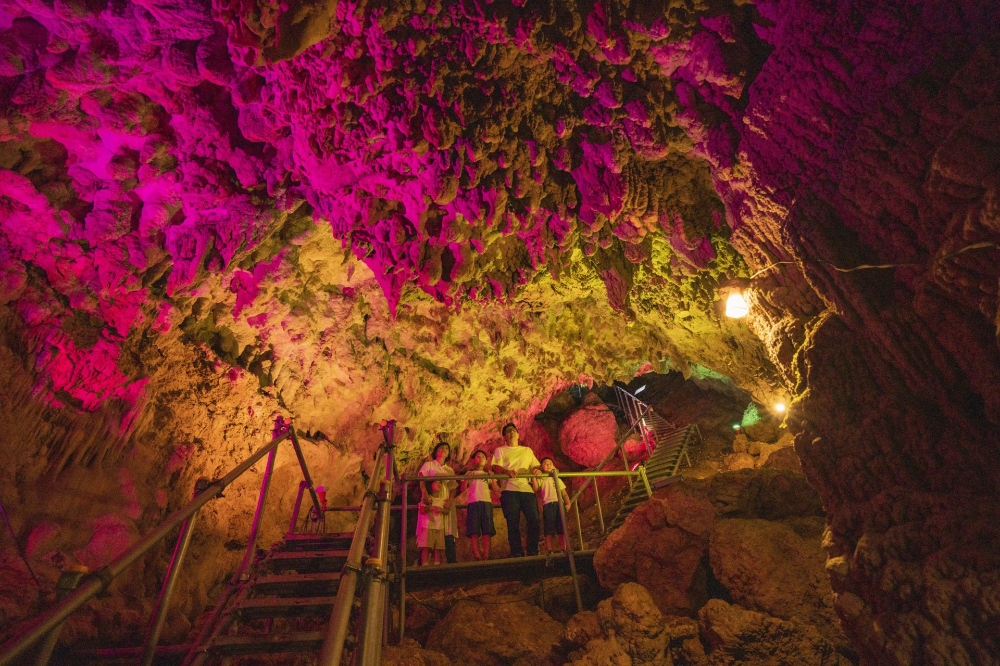
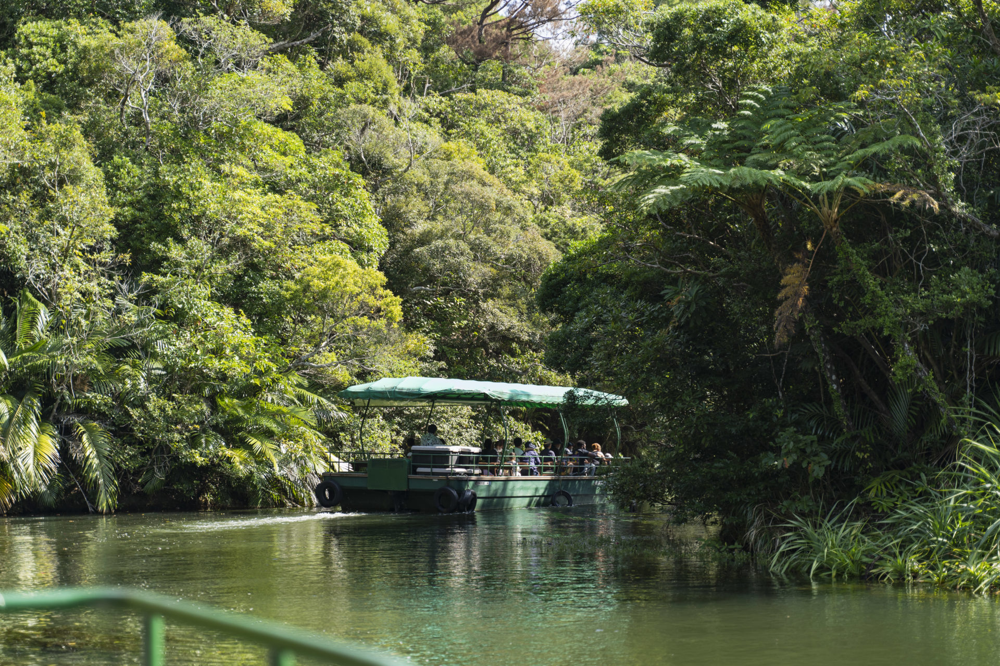
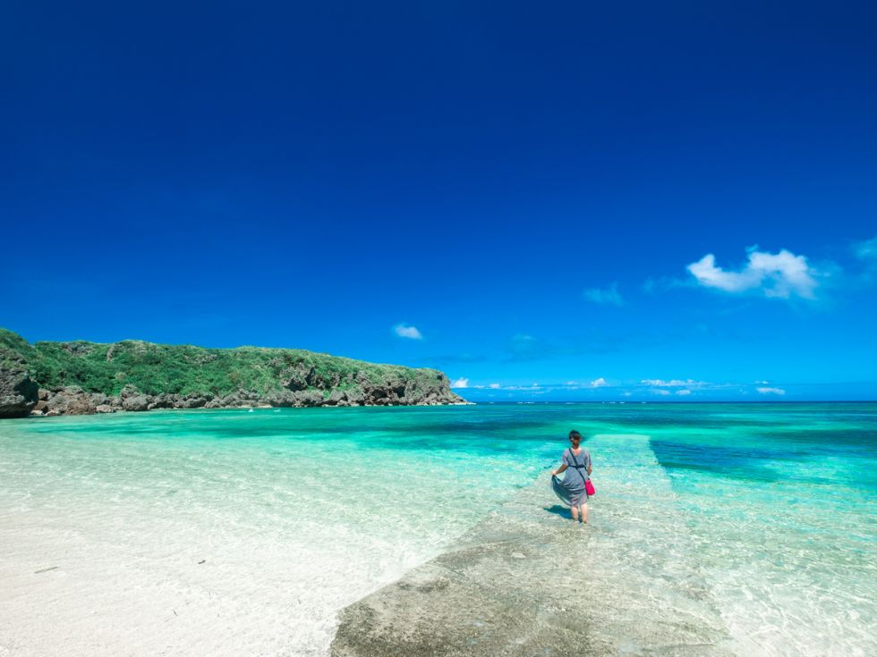
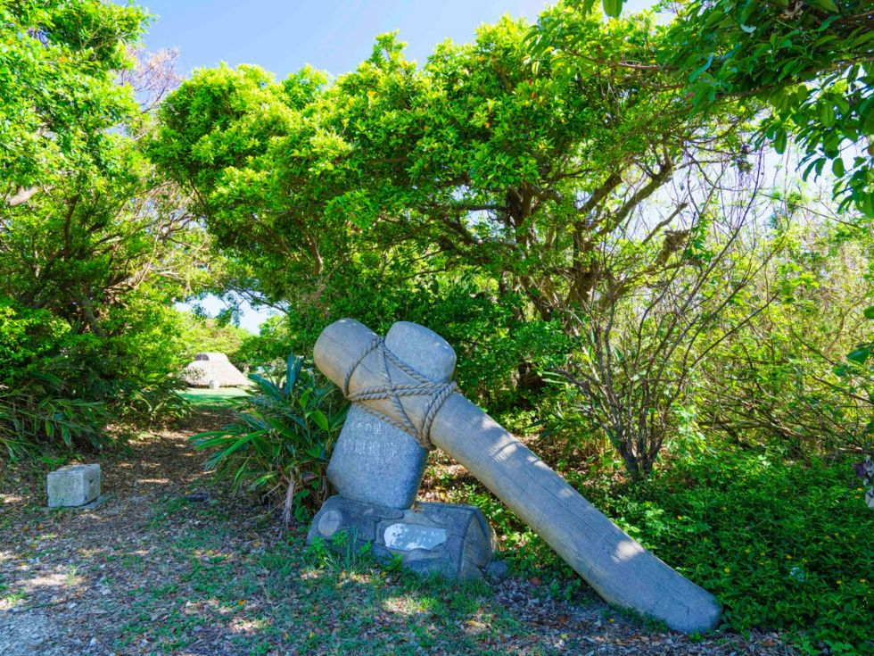
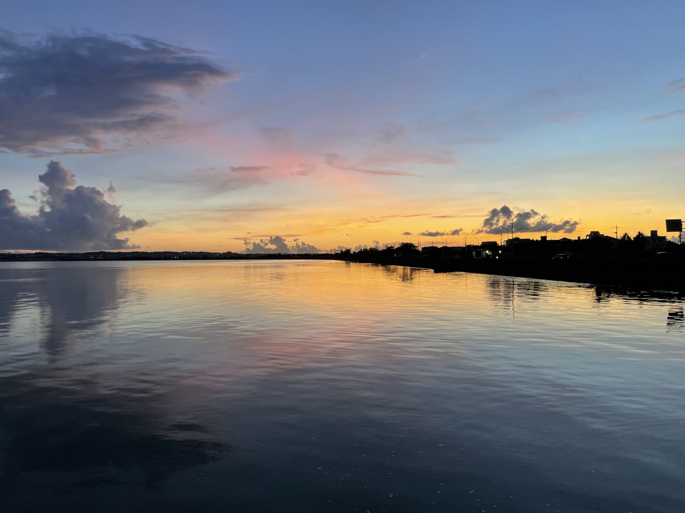
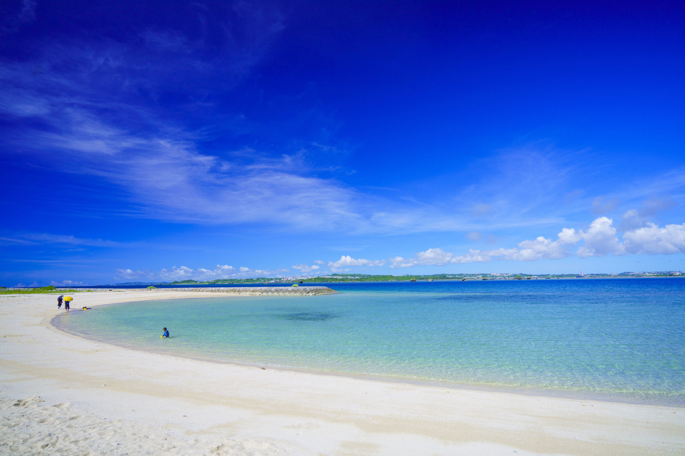
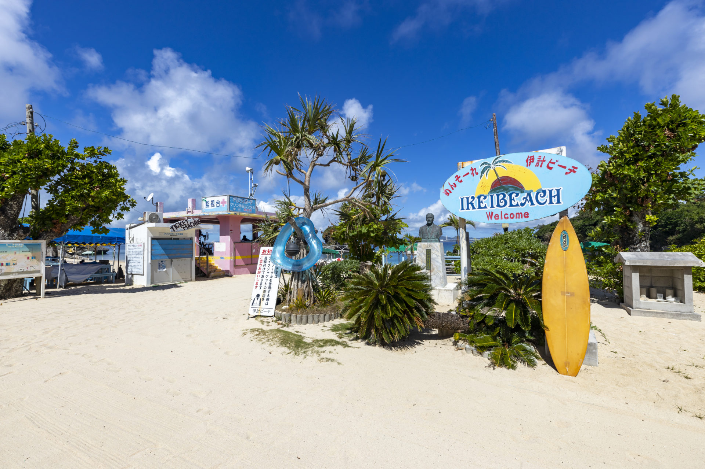
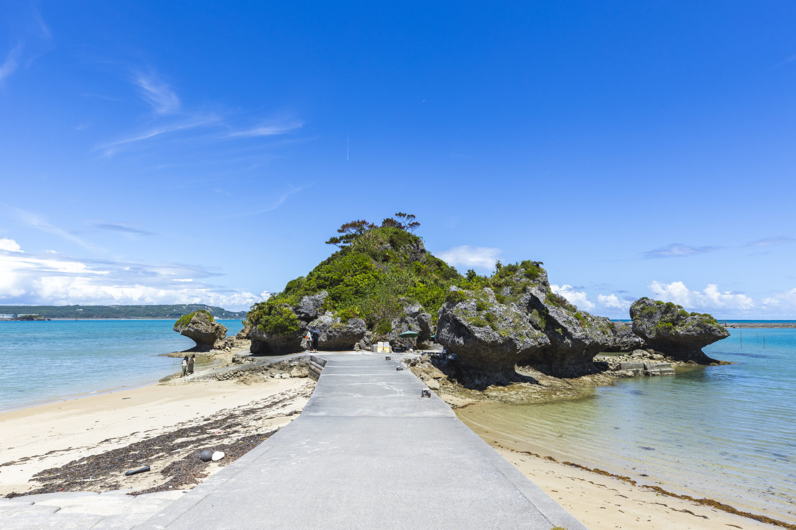
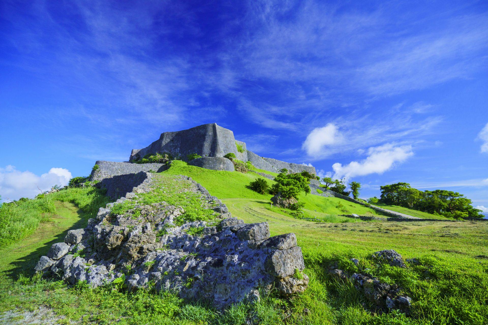
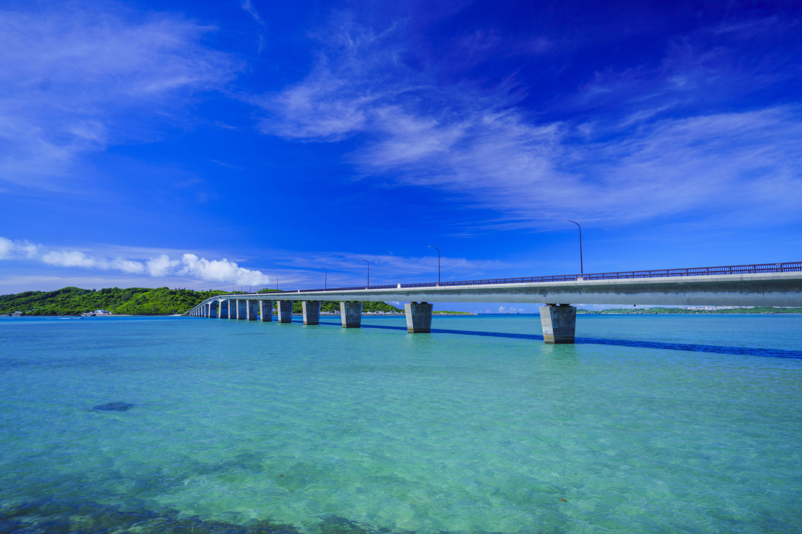